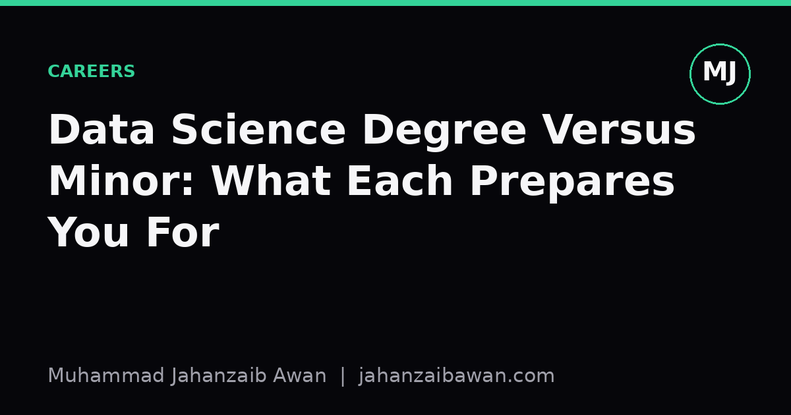

Data Science Degree Versus Minor: What Each Prepares You For
A full degree and a minor both say 'data science' on the transcript, but they build very different depths of judgement. Here is what each actually equips you to do.

Why the label hides two very different educations
Universities now sell 'data science' in at least two very different packages: a full degree, usually three or four years of dedicated study, and a minor, often four to six modules bolted onto a primary subject like economics, biology, or marketing. Both will appear on a CV as data science credentials, and both graduates might use the same tools: Python, pandas, scikit-learn, perhaps a bit of SQL. But the gap in what they can actually be trusted to do unsupervised is large, and it rarely gets discussed honestly because nobody wants to tell a student that six months of coursework does not make them equivalent to someone who spent three years on it.
The honest way to frame the difference is not in terms of knowledge, since both groups can recite definitions of overfitting or precision and recall. The difference is in judgement under ambiguity: what happens when the textbook case does not apply, when the data is messier than any lecture example, or when a stakeholder asks for something that is statistically unsound but politically convenient. A degree spends years building the instinct to notice when something is wrong. A minor spends a much shorter time building the vocabulary to participate in a conversation about data, which is still valuable, but it is a different skill entirely.
This matters practically because hiring managers, postgraduate admissions tutors, and even students themselves often conflate the two. I think it is worth being precise about what each path actually trains, because misjudging it leads to frustration on both sides: the minor graduate who expects to walk into a data scientist role and finds the depth missing, and the degree graduate who is annoyed that a six-module credential is treated as equivalent experience.
What a full degree actually builds: judgement, not just tools
A data science degree typically forces students through the unglamorous scaffolding before they ever get to build an interesting model: probability theory, linear algebra, at least one full course on experimental design, and usually a proper statistics sequence covering hypothesis testing, confidence intervals, and the assumptions behind common tests. None of this is exciting, and most students resent it at the time, but it is what lets a graduate later look at a p-value of 0.04 from an A/B test with twelve thousand users and ask the right follow-up questions: was this the only test run, was the sample randomised properly, is the effect size large enough to matter commercially, and was the stopping rule decided in advance or after peeking at the data.
Consider a concrete scenario. A dataset of hospital readmissions is handed to two people: one with a degree, one with a minor. Both can fit a logistic regression and report an accuracy of 91 percent. The degree graduate, though, has internalised that accuracy is close to useless when only 9 percent of patients are readmitted, because a model that always predicts 'no readmission' also scores 91 percent while being completely useless. They reach for precision, recall, and the area under the precision-recall curve instead, and they check whether the train-test split was done by patient rather than by visit, since the same patient appearing in both sets would leak information and inflate every metric reported. This is not an obscure technicality; it is the kind of mistake that quietly invalidates entire published results, and catching it reliably takes repeated exposure across a multi-year curriculum, not one module on classification.
A degree also usually includes a substantial independent project, often a dissertation or capstone spanning months rather than weeks. This is where the real transferable skill gets built: the experience of a model that looked excellent in week one and fell apart in week six once a subtler leakage issue or a distributional shift was found, and the discipline of documenting every decision so the work can be reproduced by someone else, including a future version of yourself. That kind of failure and recovery cycle, repeated two or three times over a long project, is very hard to compress into a short course.
What a minor actually builds: fluency, not independence
None of this means a minor is worthless; it means its value lies elsewhere. A minor typically compresses the most usable parts of data science into a form that a biologist, economist, or marketer can apply directly to their own domain within a semester or two. Someone with a biology degree and a data science minor is not expected to design a novel statistical test, but they are expected to run a correctly specified regression on gene expression data, interpret the output sensibly, and know enough to ask a specialist for help when the model's assumptions clearly do not hold. That is a genuinely useful and increasingly necessary skill across almost every applied field, and it is honest to call it a form of statistical literacy rather than professional-grade data science.
The risk with a minor is not that it teaches the wrong things, but that it can create false confidence if the gaps are not made explicit. A student who completes four modules and builds two or three polished-looking classification projects can genuinely believe they are ready for a data scientist role, when in reality they have not yet encountered the failure modes that a longer programme deliberately exposes them to: imbalanced classes, leakage through time, multiple comparisons, or the difference between correlation found in a tidy coursework dataset and correlation found in messy, real-world, unlabelled data with missing values scattered unevenly across groups.
Used well, though, a minor is an excellent complement rather than a competitor to a primary field. An economics graduate who can write clean code, run a sound regression, and critically evaluate a published model is more employable in policy analysis than one who can do neither, and more employable than a pure data science graduate who does not understand the economic theory the data is describing. The minor's real promise is not replacing domain expertise but amplifying it.
The practical takeaway
If you are choosing between the two, ask what role you actually want. If the goal is to become the person who designs the pipeline, chooses the evaluation metric, and owns the statistical defensibility of a result, a full degree is doing work a short programme genuinely cannot replicate, mostly because that judgement is built through repeated, slow exposure to failure over years, not weeks. If the goal is to bring quantitative fluency to a different primary expertise, whether in biology, journalism, or public policy, a minor is often the more efficient and entirely sufficient choice.
Either way, the credential itself should not be mistaken for the skill. The only reliable test is whether you can take a messy, unfamiliar dataset, state your assumptions honestly, choose an evaluation method that will not flatter you, and explain clearly why someone else should trust the result. That is what both paths are ultimately trying to produce, just at very different depths, and it is worth being honest with yourself about which depth you actually have before you claim it on a CV.